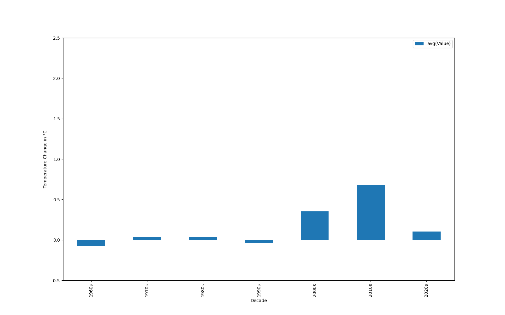
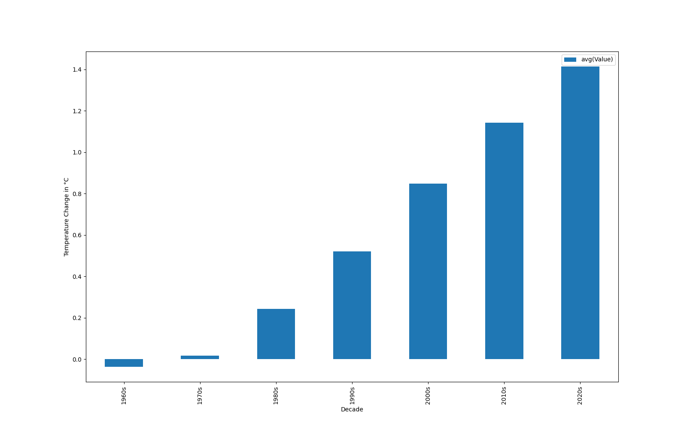
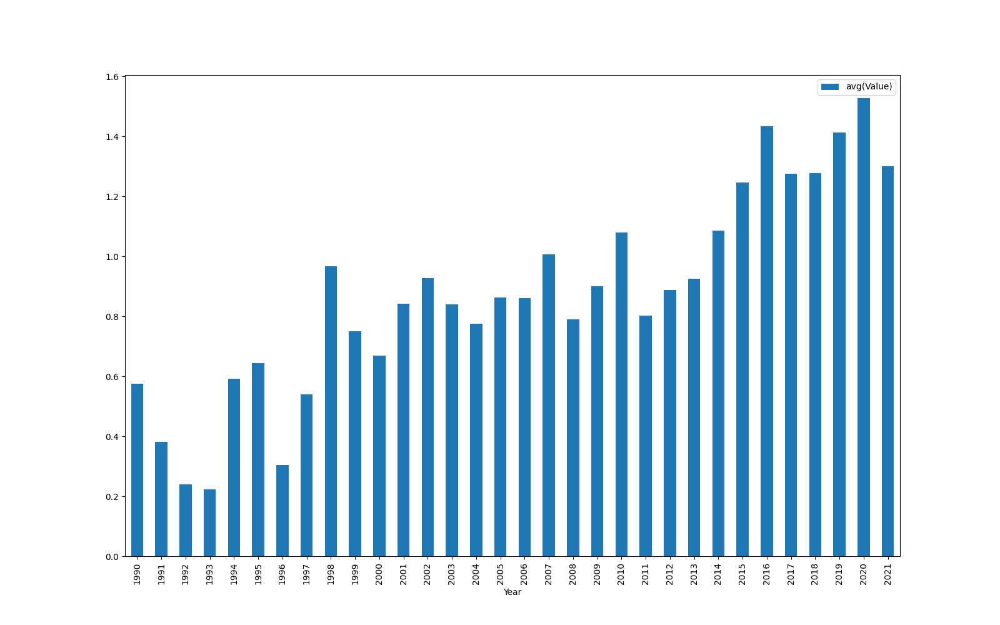
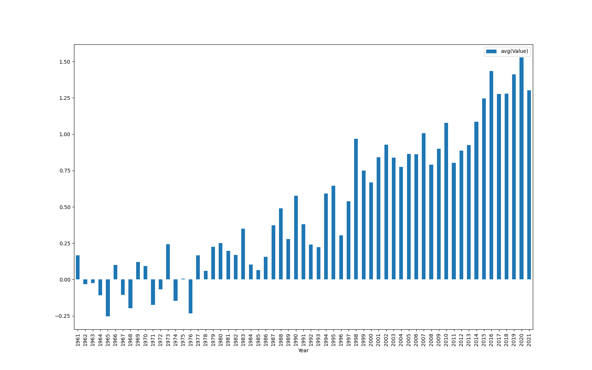
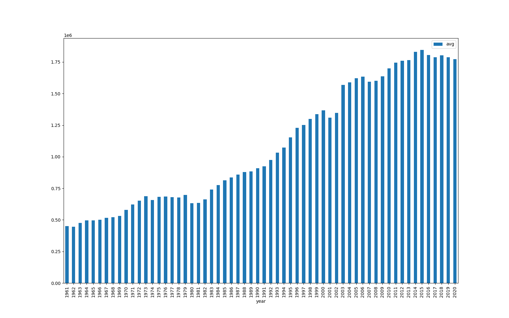
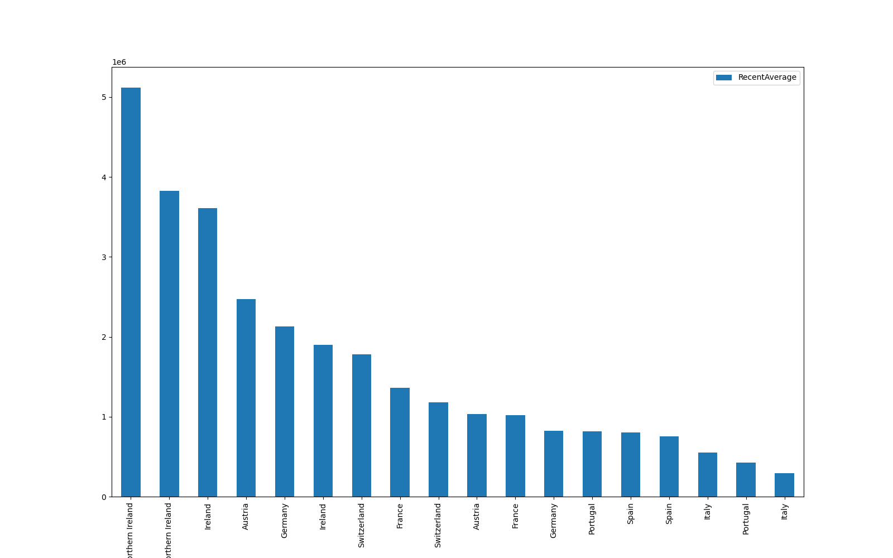
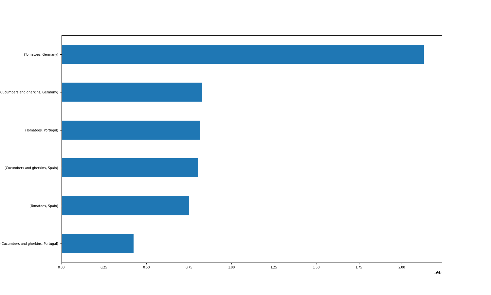

Climate Change Results
The Climate Change data shows the expected results. In the folling we display the average Temperature Change for every continent decade-wise and in the following order: Africa, America, SouthAmerica, Asia, Europe, Oceania. All of those show an increase in temperatures over the past decades.
Rather unexpected are the results for Antarctica:

Firstly we can observe slightly increasing temperatures (although far not as significant
as on other continents) yet in the past decade we observe a decrease. This could be researched more extensively
in future studies.
Summed up in the same graphic we again observe a significant increase in temperature, as expected:
Now joining the datasets by considering the average over all countries in decades:
Considering the past 30 years which are the ones where Climate Change has been observed the most:
And over all years since 1961:
Crop Production Results
As explained in the Code section, we can execute the Code for 278 different products and 245 different countries. So the following are just some examples of how one can analyse the calculated datasets. As we can see in the most_produced.csv file, there’s an interesting pattern. Countries from South America such as Chile, Argentina and Brazil produce mainly tomatoes according to the “Major Trend” row. European countries and USA are experts on producing cucumbers and gherkins according to the same row (https://www.worldstopexports.com/top-cucumbers-exporting-countries/). The production of tomatoes in South America can be explained by the weather. Tomato plants will grow in well-drained sites that receive full sun for the most of the day. The top 5 exports (by value!) of cucumber are USA, Spain, Mexico, Canada and Netherlands. Cucumbers are extremely susceptible to frost and cold damage; the soil should be at least 70ºF (21ºC) for germination. This means that a country that has not a favorable climate needs to have the resources to produce this vegetable. That explains the presence of countries like C anada, Netherlands and USA in the top 5 by value. Of course that in certain times of the year (if not every year) the production wi ll be located in stoves.
If we change just a line of code in the file most_produced_item.py to obtain, for example, which is the most produced product between meat and cereals we will observe that every country produce more cereals than meat according to the “Major Trend” row. That’s a bit surprising especially in countries like Brazil and Argentina which are largely known for their meat tradition. However there’s a logical reason. Cereal grain crops are grown in greater quantities and provide more food ene rgy worldwide than any type of crop and are therefore staple crops. Today, developing countries depend more on cereal grains for their nutritional needs than the developed world.
Looking at the averager.csv we can notice a massive growth in the crop production worldwide. That can be explained by many factors, specially when analyzing developed countries like European and North America countries. The development of producing techniques, the need of mass production, the population growth and the recent consume needs of society certainly had a lot of influence in this growth. The derivative was mainly impressing in the transition of the 60s to the 70s. After some research we were able to discover the cause of this growth. The green revolution began in the mid-20th century and consisted in the great increase in production of food grains. That resulted in large part from the introduction into developing countries of new, high-yielding varieties. For example, the average cereal yield has increased 175 percent since 1961. This means that today the world can produce almost three times as much cereal from a given area of land than it did in 1961. See image below:
After visualizing the ranker.csv file we can notice that United Kingdom leads the Tomato production and also the Cucumber production and are followed by Ireland. Much of that mass production is for intern consumption due to the high taxes of importing to the UK. Of course that being a territory with monetary resources is a must to lead the ranking. See image below:
We also thought that would be interesting to compare the crop production of Germany, Spain and Portugal since our group contains people from those 3 countries. Germany leads the production of tomatoes and cucumbers, Portugal is 3rd in tomatoes production and 6th in the cucumber production. Spain is 4th in tomato production and 5th in cucumber production. We see some similarities between the crop of Portugal and Spain that can be explained by similar climates, similar economies and similar context. See image below:
The cereal with highest increase in production in spain over the last 20 years is rye. In Germany it is maize and in Portugal barley recorded the highest production increase. In Greece and Italy we can observe that Rice was harvested mostly. Most countries show an increase in maize.
In the above picture the derivator results are shown. As the derivator computes the absolute change of the window over time, we can see that changes are increasing. This could be explained by extreme weather conditions caused by Climate change like the intense rainfalls in Germany 2021, or the extreme drought in Spain this year (and here we are simply focusing on Europe, not even considering countries most affected such as India). Such circumstances can cause significant crop shortages.
Cloud Execution
When running our scripts on Google Cloud we obtained the following times (in minutes:seconds):
4 constant threads:
2 nodes:1.11
4 nodes:1.15
8 nodes:1.16
2 constant threads:
1 thread:1.14
2 threads:1.07
8 threads:1.10
Seeing that additional nodes result in an increase (!) we conclude that the amount of data
is not big enough to justify additional nodes.
Final Comment
As often in scientific studies, the very generic relation of Crops and Climate change shows to be difficult as local grounds, events and statistical fuctuations make it difficult to draw certain conclusions. On a short-term scale climate change might increase production of certain crops. Yet, in the future, more extreme conditions (droughts, floodings, fire...) are likely to appear more often, to which we certainly need to adapt. Additionally we mention that Nasa expects the effects on Crop Production to be observable in ten years (See Link). Therefore studies like this one might gain relevance as time passes.